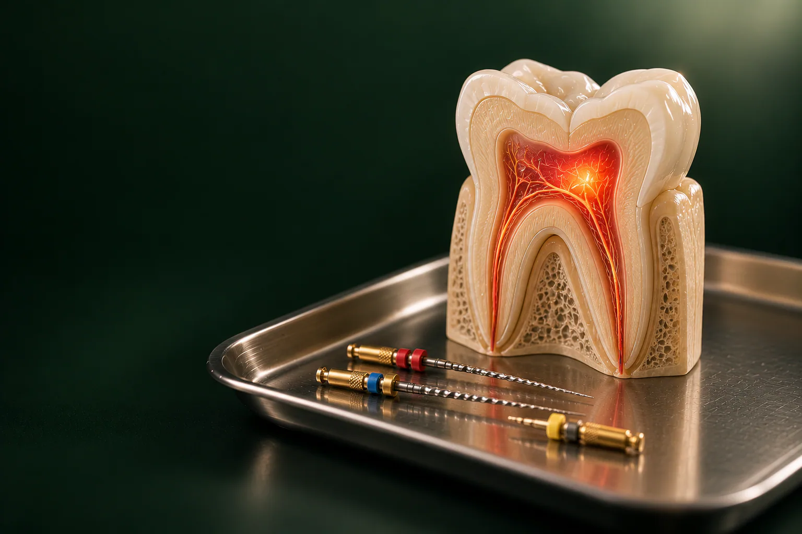

Осмотр и снимок
Врач уточняет диагноз и называет стоимость. Консультация бесплатная, прицельный снимок: 0 ₽.

Лечение пульпита в стоматологии «Умная Медицина» в пос. Удельная (Раменский округ) нужно, когда кариес добрался до нерва зуба и тот воспалился.
Имеются противопоказания. Необходима консультация специалиста.
Под местной анестезией врач удаляет поражённую пульпу, очищает и пломбирует корневые каналы, а затем восстанавливает зуб. Стоимость: от 11 000 ₽. Принимают стоматолог-терапевт, эндодонтист Читайкин Артём Сергеевич и стоматолог-терапевт Каштанова Екатерина Константиновна, консультация терапевта бесплатная.
Цена складывается из нескольких вещей: сколько у зуба каналов (у переднего обычно один, у жевательного, три-четыре), насколько они изогнуты и проходимы, лечили ли зуб раньше и чем его будут восстанавливать после. Если воспаление уже перешло на ткани у верхушки корня, это периодонтит: работы больше, и стоит она дороже. Точную сумму терапевт называет после осмотра и снимка: до начала лечения, чтобы вы заранее знали, за что платите.
Цены «от»: минимальные, окончательную сумму врач назовёт после диагностики. Цены актуальны на 18.10.2026. Остальные услуги и их стоимость: на странице цены.
уточняем у клиники
Пульпа: мягкая ткань внутри зуба с нервами и сосудами, в быту её называют нервом. Чаще всего она воспаляется из-за глубокого кариеса. Причиной бывает и кариес под старой пломбой, трещина или скол после травмы.
Пульпа заключена в жёсткие стенки, и воспалённой ткани некуда отекать, поэтому она сдавливает нервные окончания: отсюда сильная боль. Без лечения нерв постепенно погибает, инфекция по каналам уходит за верхушку корня, и начинается периодонтит. Со временем у корня может образоваться киста, и сохранить зуб становится сложнее.
Обратиться к врачу стоит, если:
Острое воспаление развивается быстро и почти всегда даёт о себе знать: боль резкая, пульсирующая, приступы становятся всё длиннее, а промежутки между ними, короче. Обезболивающие помогают ненадолго. С такой болью не стоит ждать: чем раньше начато лечение, тем проще сохранить зуб.
Хроническое воспаление может годами протекать почти незаметно: зуб временами ноет и реагирует на горячее. Иногда в разрушенной полости разрастается розоватая ткань, которая кровит при еде, а при гангренозной форме появляется гнилостный запах. Бывает, что боль проходит сама. Это не выздоровление: обычно это значит, что нерв погиб, и воспаление продолжается уже у корня.
Терапевт расспрашивает о боли, осматривает зуб, проверяет реакцию на холод и постукивание и делает прицельный снимок. Само воспаление пульпы на снимке видно не всегда, зато понятны глубина кариеса, число и форма каналов, состояние тканей у верхушки корня. При сложной анатомии или ранее леченом зубе врач может назначить КТ. уточняем у клиники
Способ врач выбирает по форме воспаления, возрасту пациента и состоянию зуба:
уточняем у клиники
Врач уточняет диагноз и называет стоимость. Консультация бесплатная, прицельный снимок: 0 ₽.
Делают местную анестезию, и дальше зуб не чувствует манипуляций.
Рабочее поле защищают от слюны уточняем у клиники.
Врач удаляет кариес и старую пломбу и открывает доступ к пульпе: этот этап называют трепанацией.
Пульпу убирают из коронковой части и из всех каналов.
Каналы проходят на всю длину и расширяют тонкими эндодонтическими инструментами, файлами уточняем у клиники.
Каналы обрабатывают современными антисептическими растворами, чтобы убрать бактерии и остатки ткани.
Если воспаление сильное, в каналы на время закладывают импортную лечебную пасту и ставят временную пломбу.
Каналы герметично заполняют до верхушки корня уточняем у клиники.
По нему врач проверяет, что каналы запломбированы на нужную длину и без пустот.
Ставят постоянную пломбу или готовят зуб к вкладке и коронке.
Сроки и цену каждого этапа врач распишет в плане лечения.
Записаться на консультациюЗуб с одним хорошо проходимым каналом нередко удаётся вылечить за одно посещение. Если каналов несколько, они узкие и изогнутые или воспаление сильное, понадобится два визита и больше: между ними в каналах работает лечебная паста. Сколько приёмов нужно вам, врач скажет при составлении плана. уточняем у клиники
При лечении каналов врач может работать со стоматологическим микроскопом, который увеличивает зуб в 25–40 раз. С ним проще найти дополнительный или узкий канал, увидеть трещину, аккуратно распломбировать ранее леченый зуб и закрыть перфорацию корня. Пациент во время такого приёма лежит, и держать рот широко открытым не нужно. Подробнее, на странице лечение под микроскопом, а о повторном лечении и периодонтите, в разделе лечение каналов зуба.
Анестезия местная: препарат вводят рядом с зубом, и участок на время теряет чувствительность. Перед уколом скажите врачу об аллергии, хронических болезнях, лекарствах, беременности или грудном вскармливании: от этого зависит выбор препарата. Если во время работы стало неприятно, сообщите: врач остановится и при необходимости добавит анестетик. уточняем у клиники Лечение под общим наркозом и седацией в клинике не проводят.
У детей пульпит встречается часто: эмаль молочных зубов тоньше, и кариес доходит до нерва быстрее. При этом ребёнок нередко не жалуется, особенно при хронической форме, поэтому родители замечают проблему уже по отёку десны или свищу. Лечить молочный зуб нужно: он держит место для постоянного, а инфекция у его корней может повредить зачаток постоянного зуба под ним.
Молочные зубы лечит детский стоматолог Троицкий Даниил Леонидович (страница врача). Первичная консультация детского стоматолога с планом лечения: 2 500 ₽, повторная, 2 000 ₽. Молочный зуб при пульпите лечат от 8 000 ₽. Метод зависит от возраста ребёнка и стадии рассасывания корней. уточняем у клиники Наркоз и седацию для детей клиника не проводит. Подробнее: в разделе детская стоматология.
Зуб без пульпы со временем становится более хрупким, а при пульпите его стенки часто уже ослаблены кариесом. Поэтому важно правильно выбрать, чем его закрыть:
Вариант терапевт подбирает вместе с ортопедом по снимку.
Каналы в клинике лечат два терапевта. Пациентам из Люберец и Раменского удобно спланировать несколько приёмов заранее, на подходящие дни.
Все специалисты: на странице врачи, обзор всех направлений терапии, в разделе лечение зубов.

Терапевт, эндодонтист
Лечение кариеса и каналов, сохранение зубов
Записаться к врачу
Терапевт, ортодонт
Эстетическая реставрация и прикус
Записаться к врачу
Детский стоматолог
Дети, профилактика и лечение детских зубов
Записаться к врачуЗдесь публикуем отзывы только тех, кто лечил пульпит в клинике, и только с их письменного согласия.
отзыв пациента
Под анестезией врач открывает полость зуба, удаляет воспалённую пульпу, очищает и промывает каналы, пломбирует их до верхушки корня и проверяет результат на снимке. Затем зуб восстанавливают пломбой, вкладкой или коронкой.
Работу проводят под местной анестезией, поэтому во время лечения зуб не должен болеть. Если чувствуете дискомфорт, скажите врачу: он добавит обезболивание. После того как действие анестезии закончится, зуб может несколько дней ныть.
Ткани у верхушки корня реагируют на обработку и пломбирование каналов, поэтому зуб может ныть, особенно при надавливании и жевании. Чаще всего это проходит само. Если боль нарастает, появились отёк или температура, покажитесь врачу: причиной может быть оставшееся воспаление или высокая пломба, которая мешает смыканию зубов.
Обычно неприятные ощущения постепенно уменьшаются в течение нескольких дней. Если через неделю легче не стало или боль усилилась, запишитесь на осмотр к лечащему врачу.
Десна у зуба может немного болеть от укола анестезии или от зажима, которым изолировали зуб, это проходит за пару дней. Если на десне появились отёк, припухлость или гнойничок, нужен осмотр.
Да, и довольно часто: кариес в молочных зубах развивается быстро. Лечить такой зуб нужно, чтобы сохранить место для постоянного и не допустить воспаления у его зачатка. Молочный зуб при пульпите лечат от 8 000 ₽, консультация детского стоматолога: 2 500 ₽.
Иногда да, например, если у зуба один хорошо проходимый канал и нет осложнений. При нескольких сложных каналах или сильном воспалении визитов будет два и больше. Точный план врач составит после снимка.
Нет. Когда боль при пульпите проходит сама, чаще всего это значит, что нерв погиб, а воспаление перешло на ткани вокруг корня. Лечить периодонтит сложнее и дороже: от 20 000 ₽ против от 11 000 ₽.
Запишитесь на консультацию: план лечения с ценой по этапам
Имеются противопоказания. Необходима консультация специалиста.
Адрес клиники: Московская обл., Раменский округ, пос. Удельная, ул. Громова, 10/2. Клиника рядом с Жуковским; по соседству Малаховка, Быково, Ильинский, Родники, Островцы, Красково и Октябрьский. Пациенты приезжают и из Люберец, Раменского и Балашихи.
На машине: из Жуковского через Быково, без выезда в Москву. Парковка: уточняем у клиники.
На МЦД-3: до станции Удельная, от неё пешком до клиники. Из Жуковского: от станции Отдых три остановки без пересадок (Ильинская, Быково, Удельная).
Если зуб болит ночью или не помогает обезболивающее, позвоните перед выездом по номеру : администратор подскажет ближайшее свободное время.
Подробнее о клинике: на странице стоматология в Удельной.
Имеются противопоказания. Необходима консультация специалиста.
пгт Удельная, Раменский округ, рядом с Жуковским.
Ежедневно с 9:00 до 21:00
+7 495 150-36-15К нам ездят из Жуковского, Раменского, Быкова, Ильинского, Красково, Малаховки, Островцов, Люберец и Балашихи.
Перезвоним за 5 минут, подберём врача и удобное время.
Оставьте номер, администратор перезвонит и ответит на вопросы.
Подойдёт КТ, панорама, прицельный снимок или фото плана лечения из другой клиники. Врач посмотрит и ответит в течение рабочего дня. Это бесплатно.
Хирург, ортопед и терапевт осмотрят вас вместе, сделаем КТ. Консультация бесплатная, стоимость лечения врач назовёт после осмотра.
Консультацию ведут вместе
 ХирургМихаил
ХирургМихаил ОртопедЕвгенийТерапевтАртём
ОртопедЕвгенийТерапевтАртёмПервый визит бесплатно
Хирург, ортопед и терапевт посмотрят ваш случай вместе и предложат два-три варианта с ценой. Оставьте номер, администратор перезвонит и подберёт время.
Скидка 10% на лечение, если оплатить его в день консультации
Перезвоним за 5 минут, ежедневно с 9:00 до 21:00.